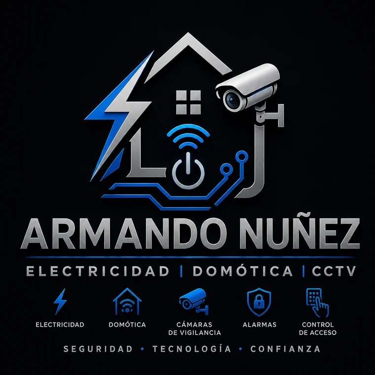

Pastilla que se dispara
Revisión de sobrecarga, cortocircuito, aislamiento y cargas conectadas.
Electricista a domicilio en Ciudad de México
Diagnóstico y solución para casas y negocios en Coyoacán y distintas zonas de CDMX: cortocircuitos, pastillas que se bajan, centros de carga, circuitos dedicados, automatización e instalación de cámaras de seguridad.

Problemas eléctricos frecuentes
Una falla puede originarse en el cableado, las protecciones, una conexión o el equipo conectado. Cambiar piezas sin diagnosticar puede ocultar el problema.
Revisión de sobrecarga, cortocircuito, aislamiento y cargas conectadas.
Localización del circuito afectado y evaluación de conexiones o conductores.
Atención a terminales flojas, daño térmico, placas o conexiones deficientes.
Diagnóstico de parpadeo, caída de tensión, sobrecarga o falso contacto.
Revisión de pastillas, neutros, empalmes y continuidad del circuito.
Evaluación de capacidad, protecciones, distribución y estado de conexiones.
Servicios eléctricos
Servicios orientados a resolver fallas y preparar instalaciones adecuadas para las cargas que utilizan.
Cortos, falsos contactos, interrupciones parciales, calentamiento y anomalías en circuitos.
Instalación, sustitución y corrección de conexiones, placas y mecanismos dañados.
Revisión, cambio y reorganización de interruptores termomagnéticos y circuitos.
Nuevos circuitos, circuitos dedicados, corrección de calibres y adecuaciones eléctricas.
Instalación de luminarias, lámparas, sensores, apagadores y nuevos puntos de iluminación.
Revisión y adecuación de tierra física, continuidad de protección y tierras aisladas.
Domótica y videovigilancia
Integración de soluciones prácticas para controlar iluminación y dispositivos, así como sistemas de cámaras para supervisión de casas y negocios.
Automatización de iluminación, sensores, temporizadores, apagadores inteligentes y rutinas compatibles con el sistema elegido.
Instalación de cámaras CCTV e IP con planeación de ubicación, canalización, cableado, alimentación y configuración básica.
Preparación de contactos, circuitos, canalizaciones y puntos de red requeridos por el sistema.
Diagnóstico de cámaras sin imagen, pérdida de alimentación, conexiones dañadas o ampliación de cobertura.
Alcance: la configuración depende de la marca, conectividad, compatibilidad y condiciones del inmueble. Antes de instalar se confirma el equipo y el alcance solicitado.
Equipos sensibles
Se revisa y adecua la alimentación que requieren equipos sensibles. Esto puede incluir circuito dedicado, protección, calibre, centro de carga, puesta a tierra, UPS o regulación.
Alimentación para consultorios, laboratorios y equipos que requieren continuidad, protección o tierra aislada.
Circuitos, protecciones y alimentación para máquinas profesionales, molinos y equipo de cafetería.
Circuitos dedicados, UPS, reguladores y protección para cómputo, puntos de venta y redes.
Revisión de continuidad, separación y condiciones de puesta a tierra según la necesidad del equipo.
Preparación de circuitos y revisión de carga para sistemas de respaldo y regulación de voltaje.
Adecuaciones para hornos, bombas, motores pequeños y equipos comerciales, previa revisión de especificaciones.
Proceso
Comparte colonia, síntomas, fotos y el tipo de instalación, equipo o sistema.
Se inspeccionan las condiciones para ubicar la falla o definir la instalación.
Se explica el alcance, materiales, condiciones y costo antes de continuar.
Se realiza el trabajo acordado y se comprueba el funcionamiento del sistema intervenido.
Cobertura
La disponibilidad depende de horario, tipo de trabajo y ubicación. Envía tu colonia para confirmar atención.
Confirmar coberturaPreguntas frecuentes
Estas respuestas son generales. La causa o solución exacta requiere revisar las condiciones del inmueble y del equipo.
Puede existir sobrecarga, corto, fuga, conexión dañada o un aparato defectuoso. No conviene instalar una pastilla de mayor capacidad sin comprobar el calibre y la carga del circuito.
Automatización de iluminación, sensores, temporizadores, apagadores inteligentes y rutinas compatibles. El alcance depende del sistema, la red y la instalación existente.
Sí. Se puede incluir ubicación, montaje, canalización, cableado, alimentación y configuración básica, de acuerdo con el sistema y el alcance cotizado.
Sí. Se atienden oficinas, consultorios, cafeterías, restaurantes, comercios y otros negocios, sujeto al alcance y disponibilidad.
Se atiende la infraestructura eléctrica que alimenta el equipo. La reparación interna electrónica, mecánica o clínica requiere al técnico autorizado correspondiente.
Colonia, descripción del problema, fotos del punto afectado y, para equipos o cámaras, modelo o fotografías de sus especificaciones.
Cotización y atención
Envía tu colonia, el servicio que necesitas y fotografías del lugar o equipo cuando sea posible.
Ante humo, fuego, chispas constantes o conductores expuestos, evita tocar la instalación y corta la energía únicamente si puedes hacerlo con seguridad.